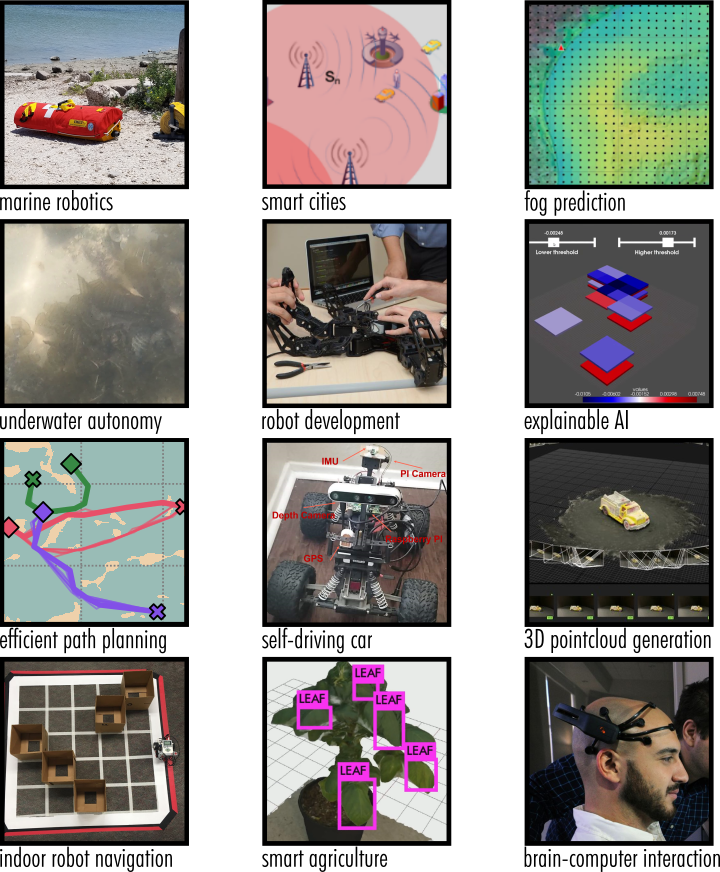

iCORE is a multidisciplinary research group at Texas A&M University - Corpus Christi (TAMUCC). With a core focus on computation, we are involved in a broad spectrum of projects in robotics, coastal & atmospheric science, smart cities & agriculture, and much more.
There are many opportunities to get involved with research as an undegraduate or graduate student. We encourage cross-discipline collaborations, and our members have backgrounds in computer science, atmospheric science, engineering, and others. iCORE can be thought of as a hub connecting students whose research has a significant computational element such as machine learning for fog prediction, energy-efficient path planning for marine robots, and simulation & visualization of floods. Students are encouraged to get involved with iCORE even if they are already working in another lab on campus. iCORE has opportunities to enhance, rather than replace, their existing research through networking, collaborations, workshops, etc.
Several iCORE projects have been conducted with external collaborators including NASA, Lonestar UAS, AI2ES, and Agrilife.

Carlos Truan Natural Resources Center, Suite 2100